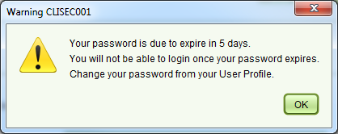
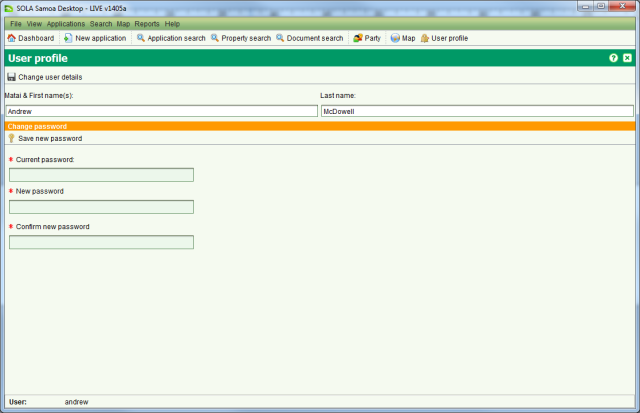

Change Your Password
Users are required to change their password at regular intervals to reduce the risk of
SOLA’s audit and security features from being compromised. From time to time you may be
prompted with the following message when logging into the SOLA Desktop.

Password Due to Expire Message
When you click OK to this prompt, the User Profile screen will be displayed allowing you to
change your password.

User Profile Change Password
Steps
-
-
Enter your current password in the Current password field.
-
Enter your new password in the New password field. Your new password must differ from
your old password by at least one character and have a minimum length of 5 characters.
-
Re-enter your new password in the Confirm new password field. Be aware that passwords
are case sensitive so you must re-enter the password exactly.
-
Click
 Save new password to change your
password.
Save new password to change your
password.
-
If your new password is accepted a message will display stating that your password was
successfully changed and the SOLA Desktop will close.
-
Restart the SOLA Desktop and login using your new password.
SOLA will warn you for up to 10 days that your password is due to expire. If you fail to
change your password during this period, you will be locked out and you will not be able to
login. In this situation, contact the System Administrator so they can change your password
for you. Note that if the Administrator resets your password, you will be prompted to change
it again the next time you successfully login to the SOLA Desktop.
If you intend to take extended leave or you feel your password has been compromised then you
should change your password immediately without waiting for the password expiry message to
appear. To change your password at any time, open the User Profile and follow the steps as
above.